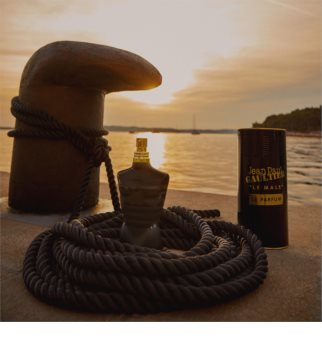

| Note de varf | CARDAMOM |
| Note de inima | LAVANDA, IRIS |
| Note de baza | VANILIE |
| Grupe de parfumuri | ORIENTALE, LEMNOASE |
Inspirația parfumului Jean Paul Gaultier Le Male Le Parfum este personalitatea puternică a unui căpitan – cel fără de care vaporul nu ar ridica ancora. Parfumul reflectă forța și carisma masculine irezistibile, derivate din rangul înalt al căpitanului, pe care vi le oferă și dvs. Flaconul memorabil, în formă de tors masculin este un element comun tuturor parfumurilor Le Male, fiind deci prezent și în această apă de parfum.
